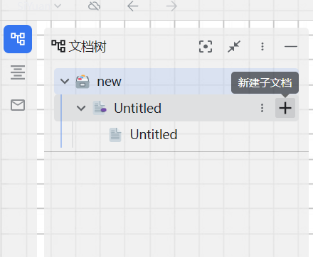

引言
思源笔记是一款很好的管理知识库的软件。支持本地（免费）和云端（付费）两种模式。
不仅支持markdown语法，还有更多实用功能。这里进行基本的使用介绍。
支持markdown语法
略
支持新建多级文档

设置标签、笔记图标和题头图
将鼠标放置到笔记开头，出现的三个icon分别对应，添加标签，设置图标和设置题头图。
设置之后的效果为：
内容块合并
内容块是思源的基础。块和块之间可以进行合并等操作。
模板
思源笔记可以制作模板，导出导入模板。让笔记标准化。
挂件
在【设置】-【集市】-【挂件】中进行下载。
目前看到比较好用的挂件有
- superdraw： 可以让实现随意涂写的挂件
- drawio：实现画流程图的挂件
- 思维导图：可以插入思维导图的挂件
其他的自行研究。这里以drawio为例。他的效果是这样的。
导入pdf并进行阅览
通过拖拽导入pdf，点击进行阅览
不仅如此，在pdf中可以进行选中和标注。将标注作为“引用链接”复制回笔记。点击“引用链接”可以直接打开pdf，并跳转到标注的位置。
导出
直接复制粘贴导出的是markdown格式的内容
也可以直接选择导出模式，导出不同平台的格式。目前支持知乎、微信公众号等。
剪藏
通过chrome插件进行web页面的笔记剪藏
类似有道云笔记的功能。
这里需要对token进行配置。token在【设置】【关于】中查看
网络图片转到本地
链接
当前块可以引用其他笔记的内容，输入两个左括号触发。
继续输入关键词，选中引用的内容即可。
鼠标悬浮在引用链接上，可以对引用的内容进行预览。
具体效果如下。
链接分为正向链接和反向连接。
正向链接就是查看链接引用了哪些内容块
反向链接就是查看哪些内容块被引用了。
点击右下角的【反向链接】图标查看
在连接中你可以右键输入锚文本修改引用链接的文本
闪卡
制作闪卡
闪卡用于背诵某些内容。制作闪卡的流程如下。
标记需要背诵的内容，选择块【添加到卡包】，创建卡包并添加。
复习闪卡
选择【闪卡】
选择卡包就可以看到待复习的闪卡了。
图表
输入/，选择插入Chart
这里输入代码即可插入chart，其格式为echarts的json格式代码。
这里有两种方式
- 使用JS编写图表
- 使用百度图说，可视化制作图表，然后复制图表代码。
这里使用第二种方式。
进入百度图说，创建图表，修改数据，点击【显示代码】
复制代码后粘贴到思源的图标代码中，就可以看到图表啦
流程图
输入/，选择插入flowchart
这里支持两种语法格式：
- flowchart.js
- plantUML
Graphviz
输入/，选择插入Graphviz
支持的语法格式为dot语法。具体可以参考网站进行绘制。在软件工程、数据库和机器学习方面用的多，效果如下。
Mermaid
输入/，选择插入Mermaid
Mermaid和Graphviz 类似。Mermaid可以绘制流程图等数十种图。
打开官网，选择右上角的【live editor】进行实时编辑。
复制代码即可在思源笔记中看到效果
MindMap
mindmap是脑图。
输入/，选择插入MindMap
之后进行编辑
多媒体
思源支持多媒体数据的插入，包括视频、链接、iframe
这里插入一个视频为例：
输入/，选择插入iframe链接，复制视频url链接。效果如下